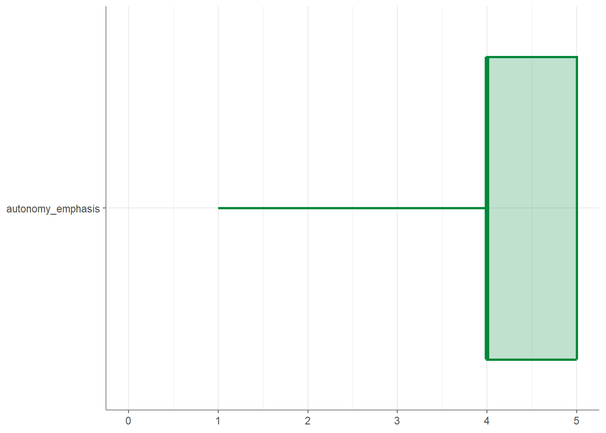
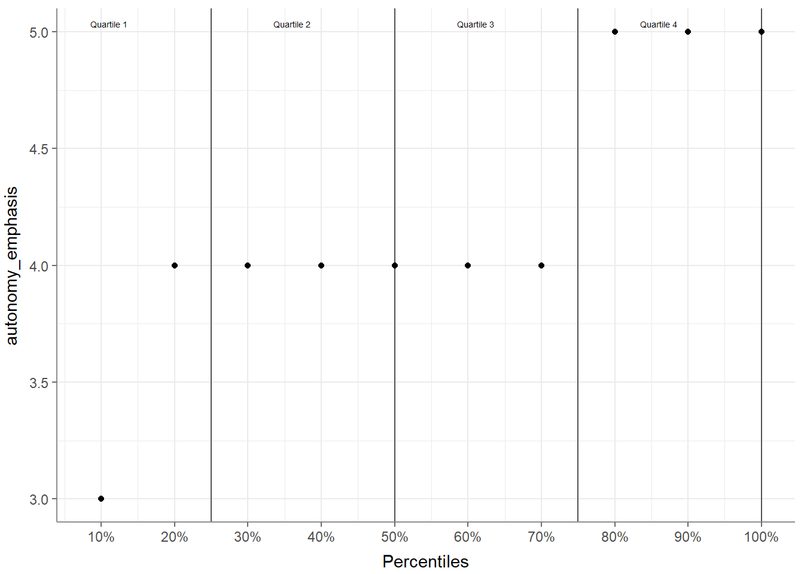

6 Tutorial: Data management with tidycomm
After working through Tutorial 6, you’ll…
- learn how to use the
tidycommpackage to perform descriptive analyses. - learn how to use tidycomm to transform / rescale variables.
If you haven’t installed the package on this machine yet, install it:
After installation, load the package:
6.1 Index generation
The tidycomm package provides a workflow to quickly add mean/sum
indices of variables to the dataset and compute reliability estimates
for those added indices. The package offers two key functions:
add_index()andget_reliability()
6.1.1 add_index():
The add_index() function adds a mean or sum index of the specified
variables to the data. The second argument (or first, if used in a pipe)
is the name of the index variable to be created. For example, if you
want to create a mean index named ‘ethical_concerns’ using variables
‘ethics_1’ to ‘ethics_4’, you can use the following code:
WoJ %>%
add_index(ethical_concerns, ethics_1, ethics_2, ethics_3, ethics_4) %>%
dplyr::select(ethical_concerns,
ethics_1,
ethics_2,
ethics_3,
ethics_4)## # A tibble: 1,200 × 5
## ethical_concerns ethics_1 ethics_2 ethics_3 ethics_4
## <dbl> <dbl> <dbl> <dbl> <dbl>
## 1 2 2 3 2 1
## 2 1.5 1 2 2 1
## 3 2.25 2 4 2 1
## 4 1.75 1 3 1 2
## 5 2 2 3 2 1
## 6 3.25 2 4 4 3
## 7 2 1 3 2 2
## 8 3.5 2 4 4 4
## 9 1.75 1 2 1 3
## 10 3.25 1 4 4 4
## # ℹ 1,190 more rowsTo create a sum index instead, set type = "sum":
WoJ %>%
add_index(ethical_flexibility, ethics_1, ethics_2, ethics_3, ethics_4, type = "sum") %>%
dplyr::select(ethical_flexibility,
ethics_1,
ethics_2,
ethics_3,
ethics_4)## # A tibble: 1,200 × 5
## ethical_flexibility ethics_1 ethics_2 ethics_3 ethics_4
## <dbl> <dbl> <dbl> <dbl> <dbl>
## 1 8 2 3 2 1
## 2 6 1 2 2 1
## 3 9 2 4 2 1
## 4 7 1 3 1 2
## 5 8 2 3 2 1
## 6 13 2 4 4 3
## 7 8 1 3 2 2
## 8 14 2 4 4 4
## 9 7 1 2 1 3
## 10 13 1 4 4 4
## # ℹ 1,190 more rowsMake sure to save your index back into your original data set if you want to keep it for later use:
6.1.2 get_reliability()
The get_reliability() function computes reliability/internal
consistency estimates for indices created with add_index(). The
function outputs Cronbach’s α along with descriptives and index
information.
## # A tibble: 1 × 5
## Index Index_of M SD Cronbachs_Alpha
## * <chr> <chr> <dbl> <dbl> <dbl>
## 1 ethical_concerns ethics_1, ethics_2, ethics_3, et… 2.45 0.777 0.612By default, if you pass no further arguments to the function, it will
automatically compute reliability estimates for all indices created with
add_index() found in the data.
## # A tibble: 1 × 5
## Index Index_of M SD Cronbachs_Alpha
## * <chr> <chr> <dbl> <dbl> <dbl>
## 1 ethical_concerns ethics_1, ethics_2, ethics_3, et… 2.45 0.777 0.6126.2 Rescaling of continuous scales
Tidycomm provides five functions to easily handle missing values (NAs), to transform continuous scales, and to standardize them:
setna_scale()allows you to set specific values toNAin selected variables or the entire data framereverse_scale()simply turns a scale upside downminmax_scale()down- or upsizes a scale to new minimum/maximum while retaining distancescenter_scale()subtracts the mean from each individual data point to center a scale at a mean of 0z_scale()works just likecenter_scale()but also divides the result by the standard deviation to also obtain a standard deviation of 1 and make it comparable to other z-standardized distributions
6.2.1 setna_scale()
setna_scale() allows you to set specific values to NA in selected variables or the entire data frame. It is a more readable alternative to dplyr::mutate(na_if())
It works for numeric, character, and factor variables.
## # A tibble: 1,200 × 2
## autonomy_emphasis autonomy_emphasis_na
## * <dbl> <dbl>
## 1 4 4
## 2 4 4
## 3 4 4
## 4 5 NA
## 5 4 4
## 6 4 4
## 7 4 4
## 8 3 3
## 9 5 NA
## 10 4 4
## # ℹ 1,190 more rows6.2.1.1 Equivalent with mutate(na_if())
## # A tibble: 1,200 × 1
## autonomy_emphasis
## <dbl>
## 1 4
## 2 4
## 3 4
## 4 NA
## 5 4
## 6 4
## 7 4
## 8 3
## 9 NA
## 10 4
## # ℹ 1,190 more rowsTo create a new variable instead of overwriting:
WoJ %>%
dplyr::select(autonomy_emphasis) %>%
setna_scale(autonomy_emphasis,
value = 5,
name = "new_na_autonomy")## # A tibble: 1,200 × 2
## autonomy_emphasis new_na_autonomy
## * <dbl> <dbl>
## 1 4 4
## 2 4 4
## 3 4 4
## 4 5 NA
## 5 4 4
## 6 4 4
## 7 4 4
## 8 3 3
## 9 5 NA
## 10 4 4
## # ℹ 1,190 more rowsMultiple values can be replaced at once:
## # A tibble: 1,200 × 16
## country reach employment temp_contract autonomy_selection autonomy_emphasis
## * <fct> <fct> <chr> <fct> <dbl> <dbl>
## 1 Germany Nati… Full-time Permanent 5 NA
## 2 Germany Nati… Full-time Permanent NA NA
## 3 Switzerl… Regi… Full-time Permanent NA NA
## 4 Switzerl… Local Part-time Permanent NA 5
## 5 Austria Nati… Part-time Permanent NA NA
## 6 Switzerl… Local Freelancer <NA> NA NA
## 7 Germany Local Full-time Permanent NA NA
## 8 Denmark Nati… Full-time Permanent NA NA
## 9 Switzerl… Local Full-time Permanent 5 5
## 10 Denmark Nati… Full-time Permanent NA NA
## # ℹ 1,190 more rows
## # ℹ 10 more variables: ethics_1 <dbl>, ethics_2 <dbl>, ethics_3 <dbl>,
## # ethics_4 <dbl>, work_experience <dbl>, trust_parliament <dbl>,
## # trust_government <dbl>, trust_parties <dbl>, trust_politicians <dbl>,
## # ethical_concerns <dbl>It also works for categorical data:
## # A tibble: 1,200 × 2
## country country_na
## * <fct> <fct>
## 1 Germany <NA>
## 2 Germany <NA>
## 3 Switzerland <NA>
## 4 Switzerland <NA>
## 5 Austria Austria
## 6 Switzerland <NA>
## 7 Germany <NA>
## 8 Denmark Denmark
## 9 Switzerland <NA>
## 10 Denmark Denmark
## # ℹ 1,190 more rows6.2.2 reverse_scale()
The easiest one is to reverse your scale. You can just specify the scale and define the scale’s lower and upper end. Take autonomy_emphasis as an example that originally ranges from 1 to 5. We will reverse it to range from 5 to 1.
The function adds a new column named autonomy_emphasis_rev:
WoJ %>%
reverse_scale(autonomy_emphasis,
lower_end = 1,
upper_end = 5) %>%
dplyr::select(autonomy_emphasis,
autonomy_emphasis_rev)## # A tibble: 1,200 × 2
## autonomy_emphasis autonomy_emphasis_rev
## <dbl> <dbl>
## 1 4 2
## 2 4 2
## 3 4 2
## 4 5 1
## 5 4 2
## 6 4 2
## 7 4 2
## 8 3 3
## 9 5 1
## 10 4 2
## # ℹ 1,190 more rowsAlternatively, you can also specify the new column name manually:
WoJ %>%
reverse_scale(autonomy_emphasis,
name = "new_emphasis",
lower_end = 1,
upper_end = 5) %>%
dplyr::select(autonomy_emphasis,
new_emphasis)## # A tibble: 1,200 × 2
## autonomy_emphasis new_emphasis
## <dbl> <dbl>
## 1 4 2
## 2 4 2
## 3 4 2
## 4 5 1
## 5 4 2
## 6 4 2
## 7 4 2
## 8 3 3
## 9 5 1
## 10 4 2
## # ℹ 1,190 more rows6.2.3 minmax_scale()
minmax_scale() just takes your continuous scale to a new range. For example, convert the 1-5 scale of autonomy_emphasis to a 1-10 scale while keeping the distances:
WoJ %>%
minmax_scale(autonomy_emphasis,
change_to_min = 1,
change_to_max = 10) %>%
dplyr::select(autonomy_emphasis,
autonomy_emphasis_1to10)## # A tibble: 1,200 × 2
## autonomy_emphasis autonomy_emphasis_1to10
## <dbl> <dbl>
## 1 4 7.75
## 2 4 7.75
## 3 4 7.75
## 4 5 10
## 5 4 7.75
## 6 4 7.75
## 7 4 7.75
## 8 3 5.5
## 9 5 10
## 10 4 7.75
## # ℹ 1,190 more rows6.2.4 center_scale()
center_scale() moves your continuous scale around a mean of 0:
WoJ %>%
center_scale(autonomy_selection) %>%
dplyr::select(autonomy_selection,
autonomy_selection_centered)## # A tibble: 1,200 × 2
## autonomy_selection autonomy_selection_centered
## <dbl> <dbl>
## 1 5 1.12
## 2 3 -0.876
## 3 4 0.124
## 4 4 0.124
## 5 4 0.124
## 6 4 0.124
## 7 4 0.124
## 8 3 -0.876
## 9 5 1.12
## 10 2 -1.88
## # ℹ 1,190 more rows
6.3 Categorizing and recoding categorical scales
Beyond rescaling continuous variables, tidycomm also provides functions for handling categorical data: categorizing continuous variables, recoding categorical scales, and transforming them into dummy variables.
6.3.1 categorize_scale()
categorize_scale() converts numeric variables into categorical ones based on specified breaks and labels. The breaks are always included in the lowest category. For example, breaks = c(2, 3) with lower_end = 1 and upper_end = 5 creates intervals from 1 to <= 2, >2 to <= 3, and >3 to <= 5.
This is useful for grouping continuous data into categories (e.g., Low, Medium, High).
WoJ %>%
dplyr::select(trust_parliament, trust_politicians) %>%
categorize_scale(trust_parliament, trust_politicians,
lower_end = 1,
upper_end = 5,
breaks = c(2, 3),
labels = c("Low", "Medium", "High"))## # A tibble: 1,200 × 4
## trust_parliament trust_politicians trust_parliament_cat trust_politicians_cat
## * <dbl> <dbl> <fct> <fct>
## 1 3 3 Medium Medium
## 2 4 3 High Medium
## 3 4 3 High Medium
## 4 4 3 High Medium
## 5 3 2 Medium Low
## 6 4 2 High Low
## 7 2 2 Low Low
## 8 4 3 High Medium
## 9 1 1 Low Low
## 10 3 3 Medium Medium
## # ℹ 1,190 more rowsYou can also give the resulting variable a custom name:
WoJ %>%
dplyr::select(autonomy_selection) %>%
categorize_scale(autonomy_selection,
lower_end = 1,
upper_end = 5,
breaks = c(2, 3, 4),
labels = c("Low", "Medium", "High", "Very High"),
name = "autonomy_in_categories")## # A tibble: 1,200 × 2
## autonomy_selection autonomy_in_categories_1
## * <dbl> <fct>
## 1 5 Very High
## 2 3 Medium
## 3 4 High
## 4 4 High
## 5 4 High
## 6 4 High
## 7 4 High
## 8 3 Medium
## 9 5 Very High
## 10 2 Low
## # ℹ 1,190 more rows6.3.2 recode_cat_scale()
recode_cat_scale() transforms one or more categorical variables into new categories based on a mapping you define.
It’s a simpler alternative to dplyr::mutate(case_when()), especially when recoding multiple variables.
You can specify:
- assign: a named vector mapping old values to new ones
- other: a value for all unmatched categories (defaults to NA)
- overwrite: whether to overwrite the original variable
- name: an optional name for the new variable
Example:
WoJ %>%
recode_cat_scale(country,
assign = c("Germany" = "german",
"Switzerland" = "swiss"),
other = "other",
overwrite = TRUE)## # A tibble: 1,200 × 16
## country reach employment temp_contract autonomy_selection autonomy_emphasis
## * <fct> <fct> <chr> <fct> <dbl> <dbl>
## 1 german Nation… Full-time Permanent 5 4
## 2 german Nation… Full-time Permanent 3 4
## 3 swiss Region… Full-time Permanent 4 4
## 4 swiss Local Part-time Permanent 4 5
## 5 other Nation… Part-time Permanent 4 4
## 6 swiss Local Freelancer <NA> 4 4
## 7 german Local Full-time Permanent 4 4
## 8 other Nation… Full-time Permanent 3 3
## 9 swiss Local Full-time Permanent 5 5
## 10 other Nation… Full-time Permanent 2 4
## # ℹ 1,190 more rows
## # ℹ 10 more variables: ethics_1 <dbl>, ethics_2 <dbl>, ethics_3 <dbl>,
## # ethics_4 <dbl>, work_experience <dbl>, trust_parliament <dbl>,
## # trust_government <dbl>, trust_parties <dbl>, trust_politicians <dbl>,
## # ethical_concerns <dbl>6.3.2.1 Equivalent with mutate(case_when())
To achieve the same result manually using dplyr::mutate(case_when()):
WoJ %>%
dplyr::mutate(
country = dplyr::case_when(
country == "Germany" ~ "german",
country == "Switzerland" ~ "swiss",
is.na(country) ~ NA_character_, # keep missing as NA
TRUE ~ "other" # everything else → "other"
)
)## # A tibble: 1,200 × 16
## country reach employment temp_contract autonomy_selection autonomy_emphasis
## <chr> <fct> <chr> <fct> <dbl> <dbl>
## 1 german Nation… Full-time Permanent 5 4
## 2 german Nation… Full-time Permanent 3 4
## 3 swiss Region… Full-time Permanent 4 4
## 4 swiss Local Part-time Permanent 4 5
## 5 other Nation… Part-time Permanent 4 4
## 6 swiss Local Freelancer <NA> 4 4
## 7 german Local Full-time Permanent 4 4
## 8 other Nation… Full-time Permanent 3 3
## 9 swiss Local Full-time Permanent 5 5
## 10 other Nation… Full-time Permanent 2 4
## # ℹ 1,190 more rows
## # ℹ 10 more variables: ethics_1 <dbl>, ethics_2 <dbl>, ethics_3 <dbl>,
## # ethics_4 <dbl>, work_experience <dbl>, trust_parliament <dbl>,
## # trust_government <dbl>, trust_parties <dbl>, trust_politicians <dbl>,
## # ethical_concerns <dbl>If you want to create a new column instead of overwriting:
WoJ %>%
dplyr::mutate(
country_rec = dplyr::case_when(
country == "Germany" ~ "german",
country == "Switzerland" ~ "swiss",
is.na(country) ~ NA_character_,
TRUE ~ "other"
)
)## # A tibble: 1,200 × 17
## country reach employment temp_contract autonomy_selection autonomy_emphasis
## <fct> <fct> <chr> <fct> <dbl> <dbl>
## 1 Germany Nati… Full-time Permanent 5 4
## 2 Germany Nati… Full-time Permanent 3 4
## 3 Switzerl… Regi… Full-time Permanent 4 4
## 4 Switzerl… Local Part-time Permanent 4 5
## 5 Austria Nati… Part-time Permanent 4 4
## 6 Switzerl… Local Freelancer <NA> 4 4
## 7 Germany Local Full-time Permanent 4 4
## 8 Denmark Nati… Full-time Permanent 3 3
## 9 Switzerl… Local Full-time Permanent 5 5
## 10 Denmark Nati… Full-time Permanent 2 4
## # ℹ 1,190 more rows
## # ℹ 11 more variables: ethics_1 <dbl>, ethics_2 <dbl>, ethics_3 <dbl>,
## # ethics_4 <dbl>, work_experience <dbl>, trust_parliament <dbl>,
## # trust_government <dbl>, trust_parties <dbl>, trust_politicians <dbl>,
## # ethical_concerns <dbl>, country_rec <chr>6.3.2.2 Reverse ordinal categories
You can also reverse ordinal items easily:
WoJ %>%
recode_cat_scale(ethics_1,
assign = c(`1` = 5, `2` = 4, `3` = 3, `4` = 2, `5` = 1),
overwrite = FALSE)## # A tibble: 1,200 × 17
## country reach employment temp_contract autonomy_selection autonomy_emphasis
## * <fct> <fct> <chr> <fct> <dbl> <dbl>
## 1 Germany Nati… Full-time Permanent 5 4
## 2 Germany Nati… Full-time Permanent 3 4
## 3 Switzerl… Regi… Full-time Permanent 4 4
## 4 Switzerl… Local Part-time Permanent 4 5
## 5 Austria Nati… Part-time Permanent 4 4
## 6 Switzerl… Local Freelancer <NA> 4 4
## 7 Germany Local Full-time Permanent 4 4
## 8 Denmark Nati… Full-time Permanent 3 3
## 9 Switzerl… Local Full-time Permanent 5 5
## 10 Denmark Nati… Full-time Permanent 2 4
## # ℹ 1,190 more rows
## # ℹ 11 more variables: ethics_1 <dbl>, ethics_2 <dbl>, ethics_3 <dbl>,
## # ethics_4 <dbl>, work_experience <dbl>, trust_parliament <dbl>,
## # trust_government <dbl>, trust_parties <dbl>, trust_politicians <dbl>,
## # ethical_concerns <dbl>, ethics_1_rec <fct>Equivalent in case_when():
WoJ %>%
dplyr::mutate(
ethics_1_rev = dplyr::case_when(
ethics_1 == 1 ~ 5,
ethics_1 == 2 ~ 4,
ethics_1 == 3 ~ 3,
ethics_1 == 4 ~ 2,
ethics_1 == 5 ~ 1,
is.na(ethics_1) ~ NA_real_
)
)## # A tibble: 1,200 × 17
## country reach employment temp_contract autonomy_selection autonomy_emphasis
## <fct> <fct> <chr> <fct> <dbl> <dbl>
## 1 Germany Nati… Full-time Permanent 5 4
## 2 Germany Nati… Full-time Permanent 3 4
## 3 Switzerl… Regi… Full-time Permanent 4 4
## 4 Switzerl… Local Part-time Permanent 4 5
## 5 Austria Nati… Part-time Permanent 4 4
## 6 Switzerl… Local Freelancer <NA> 4 4
## 7 Germany Local Full-time Permanent 4 4
## 8 Denmark Nati… Full-time Permanent 3 3
## 9 Switzerl… Local Full-time Permanent 5 5
## 10 Denmark Nati… Full-time Permanent 2 4
## # ℹ 1,190 more rows
## # ℹ 11 more variables: ethics_1 <dbl>, ethics_2 <dbl>, ethics_3 <dbl>,
## # ethics_4 <dbl>, work_experience <dbl>, trust_parliament <dbl>,
## # trust_government <dbl>, trust_parties <dbl>, trust_politicians <dbl>,
## # ethical_concerns <dbl>, ethics_1_rev <dbl>6.3.2.3 dummify_scale()
dummify_scale() converts categorical variables into dummy variables (0/1 indicators).
Each category becomes its own column.
## # A tibble: 1,200 × 3
## temp_contract temp_contract_permanent temp_contract_temporary
## * <fct> <int> <int>
## 1 Permanent 1 0
## 2 Permanent 1 0
## 3 Permanent 1 0
## 4 Permanent 1 0
## 5 Permanent 1 0
## 6 <NA> NA NA
## 7 Permanent 1 0
## 8 Permanent 1 0
## 9 Permanent 1 0
## 10 Permanent 1 0
## # ℹ 1,190 more rowsYou can also first categorize a numeric variable and then create dummy variables from the categories:
WoJ %>%
categorize_scale(autonomy_emphasis,
breaks = c(2, 3),
labels = c('low', 'medium', 'high')) %>%
dummify_scale(autonomy_emphasis_cat) %>%
dplyr::select(starts_with('autonomy_emphasis'))## # A tibble: 1,200 × 5
## autonomy_emphasis autonomy_emphasis_cat autonomy_emphasis_cat_low
## <dbl> <fct> <int>
## 1 4 high 0
## 2 4 high 0
## 3 4 high 0
## 4 5 high 0
## 5 4 high 0
## 6 4 high 0
## 7 4 high 0
## 8 3 medium 0
## 9 5 high 0
## 10 4 high 0
## # ℹ 1,190 more rows
## # ℹ 2 more variables: autonomy_emphasis_cat_medium <int>,
## # autonomy_emphasis_cat_high <int>6.3.3 Summary of all scaling functions
| Function | Purpose | Typical Use |
|---|---|---|
setna_scale() |
Replace values with NA |
Clean invalid data |
reverse_scale() |
Flip numeric scales | Reverse items |
minmax_scale() |
Rescale numeric ranges | Convert 1–5 to 0–100 |
center_scale() |
Center around mean = 0 | Prepare for regression |
z_scale() |
Center & standardize | Compare across variables, prepare for regression |
categorize_scale() |
Turn continuous into categories | Group into Low/Med/High, etc. |
recode_cat_scale() |
Recode categories | Reorganize categorical data |
dummify_scale() |
Create dummy variables | E.g., for Regression / modeling |
6.3.4 Univariate analysis
Univariate, descriptive analysis is usually the first step in data
exploration. Tidycomm offers four basic functions to quickly output
relevant statistics:
describe(): For continuous variablestab_percentiles(): For continuous variablesdescribe_cat(): For categorical variablestab_frequencies(): For categorical variables
6.3.4.1 Describe continuous variables
There are two options two describe continuous variables in tidycomm:
describe()andtab_percentiles()
First, the describe() function outputs several measures of central
tendency and variability for all variables named in the function call
(i.e., mean, standard deviation, min, max, range, and quartiles).
Here’s how you use it:
## # A tibble: 3 × 15
## Variable N Missing M SD Min Q25 Mdn Q75 Max Range
## * <chr> <int> <int> <dbl> <dbl> <dbl> <dbl> <dbl> <dbl> <dbl> <dbl>
## 1 autonomy_empha… 1195 5 4.08 0.793 1 4 4 5 5 4
## 2 ethics_1 1200 0 1.63 0.892 1 1 1 2 5 4
## 3 work_experience 1187 13 17.8 10.9 1 8 17 25 53 52
## # ℹ 4 more variables: CI_95_LL <dbl>, CI_95_UL <dbl>, Skewness <dbl>,
## # Kurtosis <dbl>If no variables are passed to describe(), all numeric variables in the
data are described:
## # A tibble: 12 × 15
## Variable N Missing M SD Min Q25 Mdn Q75 Max Range
## * <chr> <int> <int> <dbl> <dbl> <dbl> <dbl> <dbl> <dbl> <dbl> <dbl>
## 1 autonomy_sele… 1197 3 3.88 0.803 1 4 4 4 5 4
## 2 autonomy_emph… 1195 5 4.08 0.793 1 4 4 5 5 4
## 3 ethics_1 1200 0 1.63 0.892 1 1 1 2 5 4
## 4 ethics_2 1200 0 3.21 1.26 1 2 4 4 5 4
## 5 ethics_3 1200 0 2.39 1.13 1 2 2 3 5 4
## 6 ethics_4 1200 0 2.58 1.25 1 1.75 2 4 5 4
## 7 work_experien… 1187 13 17.8 10.9 1 8 17 25 53 52
## 8 trust_parliam… 1200 0 3.05 0.811 1 3 3 4 5 4
## 9 trust_governm… 1200 0 2.82 0.854 1 2 3 3 5 4
## 10 trust_parties 1200 0 2.42 0.736 1 2 2 3 4 3
## 11 trust_politic… 1200 0 2.52 0.712 1 2 3 3 4 3
## 12 ethical_conce… 1200 0 2.45 0.777 1 2 2.5 3 5 4
## # ℹ 4 more variables: CI_95_LL <dbl>, CI_95_UL <dbl>, Skewness <dbl>,
## # Kurtosis <dbl>You can also group data (using dplyr) before describing:
## # A tibble: 5 × 16
## # Groups: country [5]
## country Variable N Missing M SD Min Q25 Mdn Q75 Max Range
## * <fct> <chr> <int> <int> <dbl> <dbl> <dbl> <dbl> <dbl> <dbl> <dbl> <dbl>
## 1 Austria autonom… 205 2 4.19 0.614 2 4 4 5 5 3
## 2 Denmark autonom… 375 1 3.90 0.856 1 4 4 4 5 4
## 3 Germany autonom… 172 1 4.34 0.818 1 4 5 5 5 4
## 4 Switze… autonom… 233 0 4.07 0.694 1 4 4 4 5 4
## 5 UK autonom… 210 1 4.08 0.838 2 4 4 5 5 3
## # ℹ 4 more variables: CI_95_LL <dbl>, CI_95_UL <dbl>, Skewness <dbl>,
## # Kurtosis <dbl>Finally, you can create visualizations of your variables by applying the
visualize() function to your data:

Second, the tab_percentiles function tabulates percentiles for at
least one continuous variable:
## # A tibble: 1 × 11
## Variable p10 p20 p30 p40 p50 p60 p70 p80 p90 p100
## * <chr> <dbl> <dbl> <dbl> <dbl> <dbl> <dbl> <dbl> <dbl> <dbl> <dbl>
## 1 autonomy_emphasis 3 4 4 4 4 4 4 5 5 5You can use it to tabulate percentiles for more than one variable:
## # A tibble: 2 × 11
## Variable p10 p20 p30 p40 p50 p60 p70 p80 p90 p100
## * <chr> <dbl> <dbl> <dbl> <dbl> <dbl> <dbl> <dbl> <dbl> <dbl> <dbl>
## 1 autonomy_emphasis 3 4 4 4 4 4 4 5 5 5
## 2 ethics_1 1 1 1 1 1 2 2 2 3 5You can also specify your own percentiles:
## # A tibble: 2 × 5
## Variable p16 p50 p84 p100
## * <chr> <dbl> <dbl> <dbl> <dbl>
## 1 autonomy_emphasis 3 4 5 5
## 2 ethics_1 1 1 2 5And you can visualize your percentiles:
